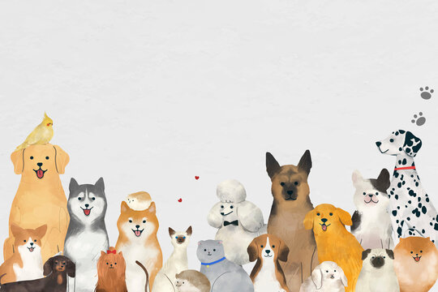

Pet Care
Lembaga non-profit untuk meningkatkan kesejahteraan kucing dan anjing jalanan

Biarkan Mereka Bermain
Memberikan tempat sementara untuk mereka yang masih menunggu adopsi

Adopsi Jangan Beli
Dengan memilih adopsi, otomatis ada dua nyawa yang terselamatkan. Nyawa hewan yang kita pilih untuk diadopsi dan nyawa hewan lain yang kemudian memiliki kesempatan untuk ditolong juga